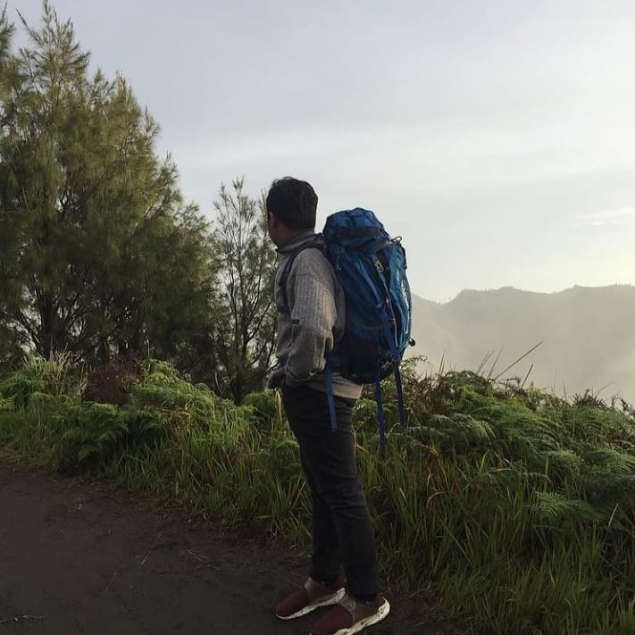
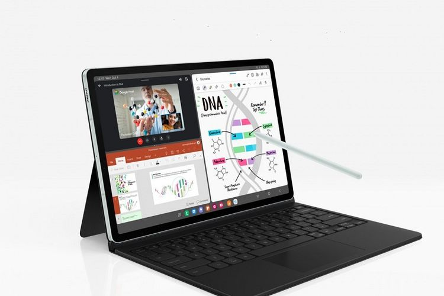

About Me
Nama saya Muhammad Hafidz Syahrul Ramdhan, siswa SMK 3 Perguruan Cikini yang gemar bermain basket dan olahraga boxing. Saya masuk TKJ awalnya atas perintah orang tua, setelah beberapa bulan saya jadi sangat tertarik dalam dunia komputer. Saya menghabiskan waktu luang saya dengan bermain game dan juga berolahraga seperti basket, boxing, joging dll.
Artikel Teknolgi Terkini!
